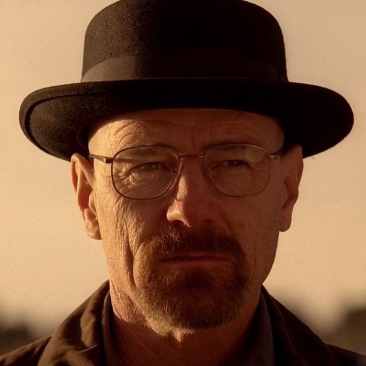

Personal Profile

He is introduced as a chemist who graduated from the California Institute of Technology, who co-founded the company Gray Matter Technologies. He left Gray Matter abruptly, selling his shares for $5,000. Soon after, the company made a fortune, largely thanks to Walt's research. Walt later moved to Albuquerque, New Mexico, where he became a high school chemistry teacher. On his 50th birthday, he is diagnosed with stage IIIA lung cancer. After this discovery, Walt turns to manufacturing and selling methamphetamine with a former student of his, Jesse Pinkman (Aaron Paul), to ensure his family's financial security after his death. He becomes increasingly immersed in the illicit drug trade, becoming more ruthless as the series progresses, and later adopts the alias "Heisenberg", which becomes recognizable as a key figure in the Southwestern drug trade.